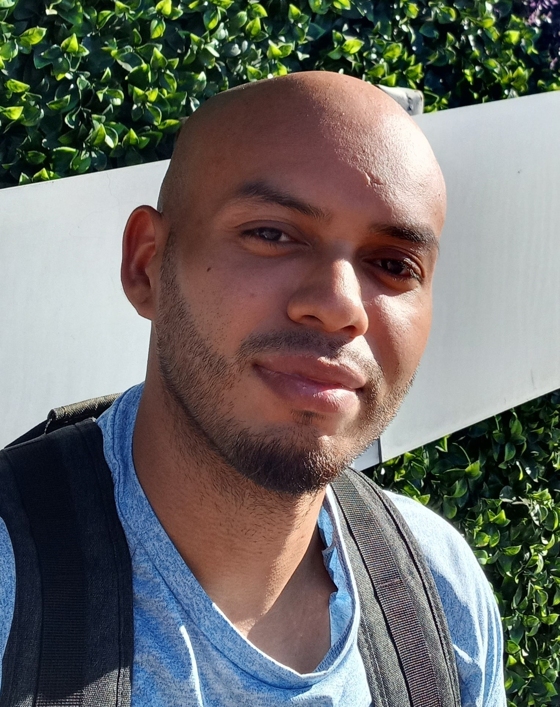

Obell Moreno's resume

Summary
I am currently in love with web development, since first day i come across this amazing world, I don't want to stop
learning every single day
Education
- Highschool diploma
- Learning Web development on my own by taking Angela yu's course on UDEMY
- English C1 Level learnt on my own with thousands of ours practicing
- Love to learn new things constantly
Work experience
Skills
- Critical thinking⭐⭐⭐⭐⭐
- Customer service⭐⭐⭐⭐
- Solutions focus⭐⭐⭐⭐⭐
- Microsoft Office Suit⭐⭐⭐⭐
- Problem solver⭐⭐⭐⭐⭐
- Team Player⭐⭐⭐⭐⭐
Awards and certs
- CompTIA a+
- Cisco CCNA 200-301
Other
Contact me
My Hobbies